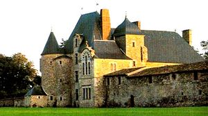
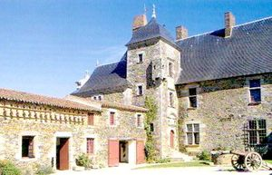
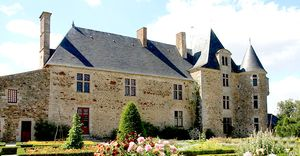
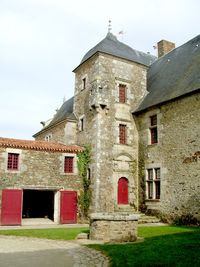
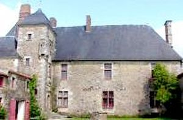
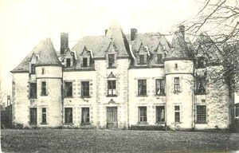
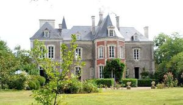

Recensement Jean-Claude Truffet
| Département | 85 — Vendée |
| Canton | Aizenay |
| Commune | Saint-Sulpice le Verdon |
| Type d'édifice | Château |
| Période d'origine | XVI |







A Six KM de de St-Sulpice le château de Butière à Mormaison CHABOTERIE, il appartenait à la famille des Chabot doù son nom de Chabotterie, puissante seigneurie de Rocheservière et de Saint-Denis la Chavasse, Jean de Chabot édifie en 1384 le premier château, Arthur de Chabot n'ayant eu que deux fils morts sans postérité le domaine passe à sa fille Perette qui épouse en 1554 Jacques Aubert seigneur de la Normandelière, restée veuve Perette convole en 1576 avec Gabriel Darrot seigneur de la Fromentinière, déja père de deux enfants un fils et une fille issus d'une précédente union. Les enfants de Perette un fils et une fille épousent le fils et la fille de leur beau-père, en 1588 la Chabotterie revient à Gabriel Darrot resté veuf du second mariage et à Jean Aubert gendre et beau-fils de procéder la remise en état du château, et à sa mort en 1627 aucun des sept enfants nés de ses trois mariages successifs n'a survécu et le domaine passe aux descendants de sa soeur Elisabeth; habité par des fermiers de la seigneurie échoit en 1642 à Héléne Darrot, épouse de son cousin Gilbert Darrot seigneur de l'Huilière. Leurs descendants dans cette famille jusqu'en 1728 sa veuve transmet le domaine à l'une de ses nièces madame de Fontenelle, puis à la fille de cette dernière madame de Goué. Passe des moments sombres à la Révolution deux de leurs fils émigrent, plusieurs de leurs filles massacrées en 1794 malgré tout reste dans la descendance des Goué Jusqu'à son rachat en 1991 par le conseil général de Vendée pour abriter le Mémorial .
CHABOTTERIE, le château date de la seconde moitié du XVe siècle. établi à l'emplacement d'une forteresse détruite lors de la guerre de Cent Ans, construit essentiellement en deux étapes (un Logis du XVe siècle auquel s'adjoint au nord un imposant pavillon carré au début du XVIIe siècle) modifié au XVIIIe siècle et XIXe siècle, il est connu pour avoir été impliqué à plusieurs reprises dans des événements historiques majeurs pour la Vendée: les Guerres de Religion et l'arrestation du chevalier de Charrette en 1796. De son architecture assez hétérogène, on retient surtout l'élévation très élaborée de la tour d'escalier XVIIe. Devenu l'un des lieux emblématiques de la guerre vendéenne, il est aménagé en musée, surtout consacré à la reconstitution des intérieurs ruraux du XVIIIe siècle. Lattrait principal du château et la célèbre cuisine où Charrette, chef vendéen, au moment des guerres de Vendée, prisonnier et blessé, fut transporté par les soldats du général révolutionnaire. Cette pièce a été remise dans létat exact où elle se trouvait en 1796. A quelques centaines de mètres du logis, le petit bois où Charrette traqué se réfugia, une croix a été élevé à lendroit même de sa capture. Le jardin a été aménagé et présente des parterres classiques, un potager et une roseraie. Il y a aussi un second château dans le village à découvrir.
Famille des Chabot
"
A St-Sulpice le château de Butière à Mormaison grav 6-7 Chaboterie grav 1 à 5; 46° 53" 39" nord, 1° 25" 09" Ouest